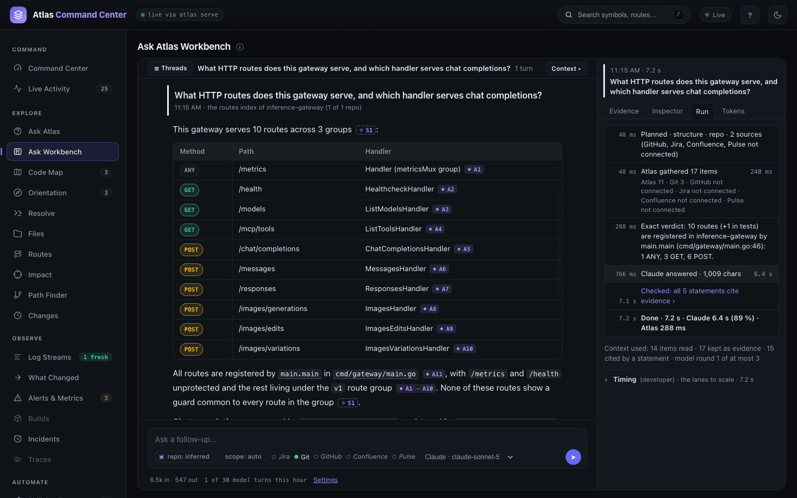
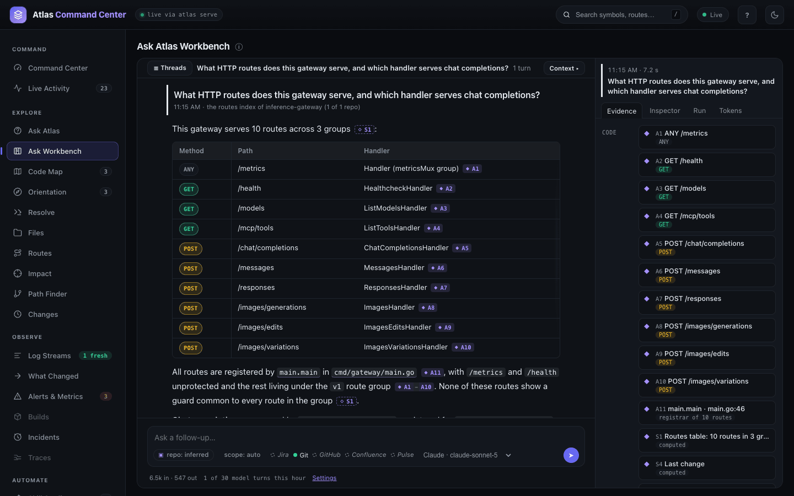
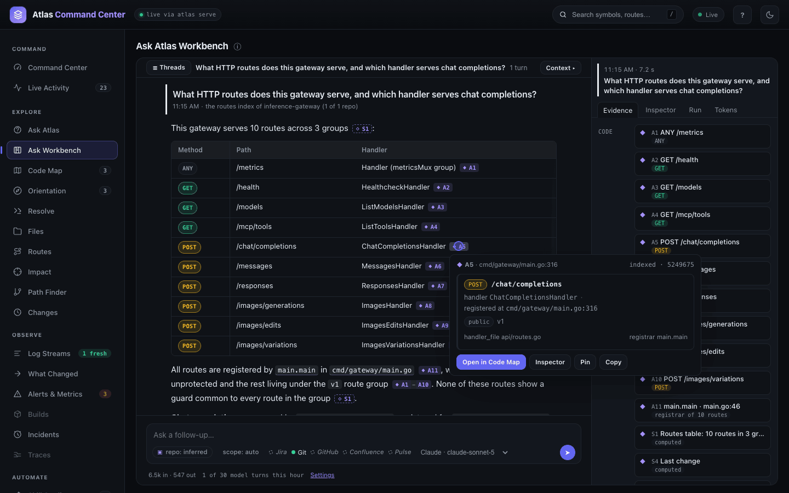
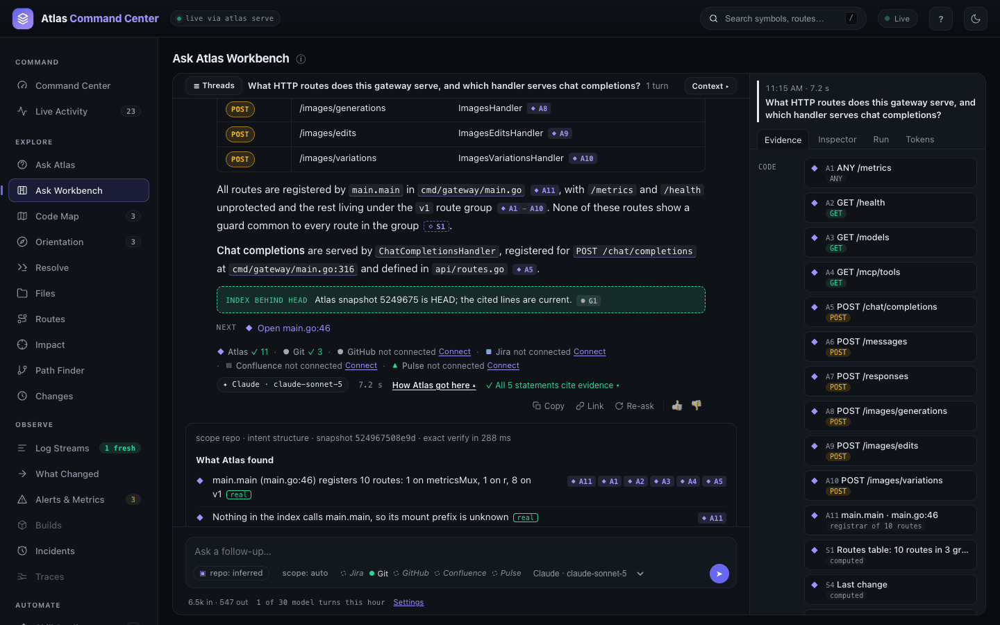
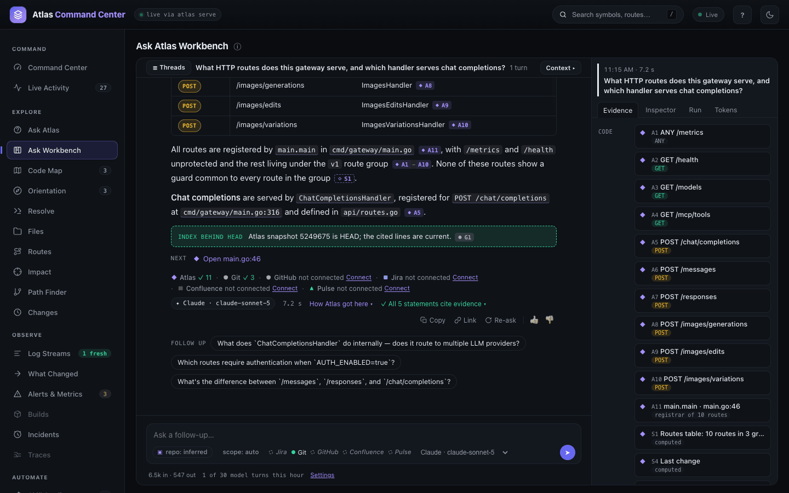
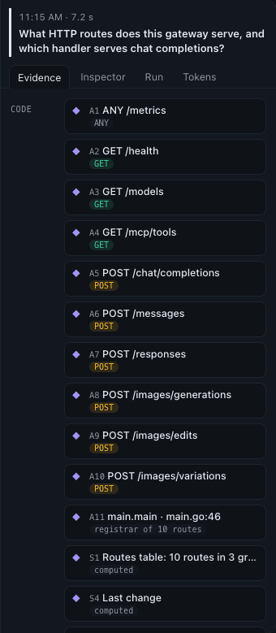
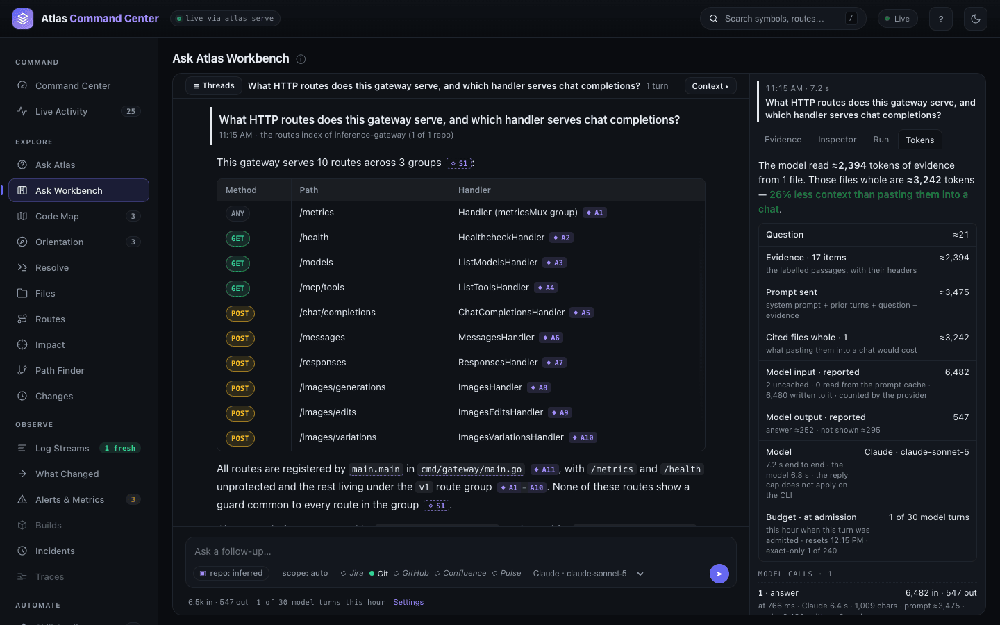
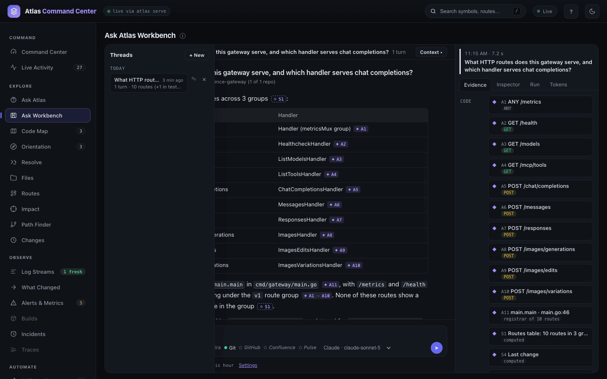

Ask Workbench
The Ask Workbench is a conversation about your codebase, held inside the Atlas dashboard. You ask in plain language; Atlas gathers the evidence — code passages from its index, git history, and the tickets, pull requests and findings of the sources you connected — plus what it computed itself (routes tables, usage counts, definitions, last changes); a model you choose writes the answer, citing that evidence line by line. Every citation opens the record it came from, and every thread is kept by the server so you can come back to it.
The Workbench needs a running service (Dashboard and HTTP API) and an AI provider (AI assistant setup). Without a provider it still answers, with Atlas's own deterministic verdict and facts.
Open It
atlas serveOpen the dashboard (http://127.0.0.1:3099/dashboard) and choose Ask Workbench. The composer takes a question; the chips beneath it pick the repository, the sources to consult (Git, GitHub, Jira, Confluence, Pulse — the ones your service has connected), and the model.
A first question starts a thread. Every later question in the same composer continues it: the server keeps the turns, and the model reads the earlier ones as context. The rail on the left lists your threads; #/workbench?thread=<id> reopens one without re-asking anything.
What Happens in a Turn
- Plan. Atlas reads the question, resolves its scope (a repository, a file, a symbol, a ticket or a pull request) and plans which sources to ask.
- Gather. The sources run in parallel: the index returns the passages and definitions that match, git blames the lines the question points at, GitHub, Jira, Confluence and Pulse return their records. When the question asks who changed something or which of two things is actually used, Atlas pre-fetches the blame and the callers so the model has them from the start.
- Compute. Atlas builds its exact verdict and facts — the routes table, the usage summary, the definitions, the last change — and hands them to the model as labelled evidence (
S1…S5) beside the passages (A…), commits (G…), tickets (J…), pages (C…) and findings (P…). - Answer. The model writes the answer in whatever shape the question calls for — a sentence, a list, a table, a walk-through — citing the labels inline. A multi-part question is answered part by part.
- Ask for more. When the evidence does not cover something Atlas could fetch, the model asks for it (a symbol's whole body, a file, a search, the callers of a function, a git blame, a ticket) and Atlas resolves the request in well under a second. If the model answered first and then asked, it revises the answer once as a patch: only the sections the new evidence changes are rewritten, and they are marked. By default a turn makes at most three model calls and one revision; what the model would still like to fetch is offered as a follow-up suggestion instead.
The whole turn streams, so you watch the sources answer, the model write, and the revision land.

Reading an Answer

- Citations are chips (
A3,G1,J2). Click one for the evidence: the passage with its path and lines, the commit, the ticket. Ticket keys, pull request numbers and commit hashes in the prose are links to Jira or GitHub when the turn holds that record; file paths and symbols link to the Code Map. - How Atlas got here (below the answer) opens the deterministic trail: the exact facts with their source tags, the plan, the routes table, every evidence item.
- The trust cue in the footer counts the statements that cite evidence and flags the ones that do not; Check opens the graded view.
- Copy, Link and Re-ask sit in the footer. Copy gives the answer as Markdown with its sources; Link is a permalink to the turn at its snapshot; Re-ask runs the same question again at that snapshot as a new turn.
- Follow up chips under the last turn are the model's suggested next questions; the composer continues the thread.



The Side Panel
The panel on the right follows the selected turn and names it ("Turn 2 of 3 · 10:24 · 3 rounds · revised once · 48 s"), with ‹ › to move between turns.
- Evidence lists everything the turn gathered, by source.
- Inspector shows one item in full; pin a chip to keep it there.
- Run tells the turn as a timeline — planned, gathered, answered, asked, fetched, revised, checked, done — with the time each step took. The Conversation scope shows where the time went across every turn.
- Tokens shows what the turn cost: the prompt the model read (input, including the prompt cache), its output, the time, and the budget; per model call inside the turn, and totals across the conversation with one row per question.


Threads, Ownership and Sharing
Threads live in the service's database, not in the browser. On a laptop's own Atlas every thread belongs to you. A shared service (one that identifies its callers through a Jira OAuth session or a gateway identity header) keeps each thread private to its owner unless the owner shares it with the tenant; an operator token sees all of them, a read-only token sees shared ones. Rename, share and delete from the thread's header.

Use It from the API
The Workbench is an HTTP route like every other dashboard feature, so a script or another tool can ask the same questions:
# ask, streaming the turn as server-sent events (thread_id continues a thread)
curl -N -X POST http://127.0.0.1:3099/api/v1/ask/workbench \
-H 'content-type: application/json' \
-d '{"question":"what are the auth routes, and who last changed the login one?"}'
# the threads the server keeps
curl http://127.0.0.1:3099/api/v1/ask/workbench/threads
curl http://127.0.0.1:3099/api/v1/ask/workbench/threads/<id>The stream's frames — thread, plan, agent.*, merge, verify, meta, delta, more, usage, patch, done — are described in openapi.json on the running service. A thread is read with GET …/threads/{id}, renamed with PATCH, deleted with DELETE; DELETE …/threads removes all of the caller's threads. Reads need the read-only token or better where a token is set; writes need the read-write token.
Choosing the Model
The Workbench uses the same providers as the Ask page's AI answers: a claude or codex CLI that is installed and logged in is detected automatically, and an API key can be stored with atlas llm set. atlas llm status shows what is configured and which models the provider offers; the composer's model menu lists those models. On the Claude CLI, a call that only decides what Atlas should fetch runs at low reasoning effort; the answer runs at the CLI's default unless ATLAS_WORKBENCH_ANSWER_EFFORT says otherwise.
What Leaves the Machine
Only when a model is configured and a question is asked: the question, the labelled evidence the turn gathered (passages, never whole files; records from the connected sources), the earlier turns of the thread as context, and the instructions. Nothing is sent when no provider is configured, and nothing is sent for the exact verdict. See Privacy and Data Handling.
Limits and Settings
| Setting | Default | What it bounds |
|---|---|---|
ATLAS_WORKBENCH_MODEL_ROUNDS | 3 | Model calls one answer may make (an answer, plus rounds of asking Atlas for more) |
ATLAS_WORKBENCH_MODEL_REVISIONS | 1 | Times an answer may be written again after the model asked for more |
ATLAS_WORKBENCH_MAX_EVIDENCE_TOKENS | 24000 | Evidence a prompt may carry; past it the prompt is trimmed and the trimmed items are listed |
ATLAS_WORKBENCH_ANSWER_MAX_TOKENS | 4000 | The longest reply, on the API providers |
ATLAS_WORKBENCH_ASK_EFFORT / ATLAS_WORKBENCH_ANSWER_EFFORT | low / the CLI's own | Reasoning effort of an asking call and of an answering call on the Claude CLI |
ATLAS_WORKBENCH_HISTORY_TURNS / ATLAS_WORKBENCH_HISTORY_RUNES | 6 / 4000 | How much of the thread the model reads as context |
ATLAS_WORKBENCH_MODEL_TURNS_PER_HOUR | 30 | Model turns per token per hour; past it a turn answers with the exact verdict only |
ATLAS_WORKBENCH_TURNS_PER_HOUR | 240 | Turns per token per hour; past it the route answers 429 with retry_after |
ATLAS_WORKBENCH_MODEL_FORMAT | answer | chat switches back to the earlier two-part explanation format |
atlas config list prints every setting with its current value; see Configuration for precedence.
When It Does Not Answer
- "Exact only" and no model chip: no provider is configured or detected.
atlas llm statussays why;atlas llm detect --applyregisters a logged-in CLI. llm_auth_failedalthough the CLI is logged in: the service could not probe the CLI in time — typically a VPN or endpoint-security agent slowing every process launch on the host. Ask again without the tunnel, or store an API key so no subprocess is needed.- "The model is off for this question": the hourly model budget for your token is spent; the exact verdict still answers.
- A thread answers 404: it is not yours to see on a shared service, or it was deleted.
See Troubleshooting for service-level problems.